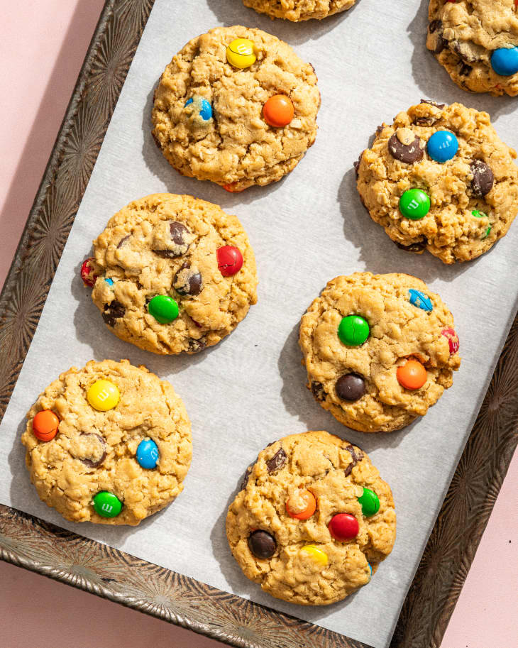

Home
Gluten-Free Monster Cookies

Description
Monster Cookies are easy to make and taste pretty good even though they're gluten-free.
These cookies are especially good if you're a fan of oatmeal cookies, since the main ingredients are oats, M&Ms, and peanut butter.
- 1 1/2 Cups Peanut Butter
- 4 1/2 Gluten-Free Oats
- 1 1/4 Cups Brown Sugar
- 3 Eggs
- 1 Cup Sugar
- 1/2 Tsp Salt
- 2 Tsp Baking Soda
- 1 Cup Plain M&Ms
- 1 Cup Chocolate Chips
- Preheat Oven to 350 F
- Combine eggs, brown sugar, sugar, salt, and vanilla
- Mix in the peanut butter, butter, and baking soda
- Fold in the oats, M&Ms, and chocolate chips
- Line a baking sheet with parchment paper and place the cookies in tablespoon size on teh cookies sheet, about 2 inches apart
- Bake for 10-12 minutes at 350F until lightly browned
- Let them cool for 5 minutes, then move to a cooling rack to fully cool